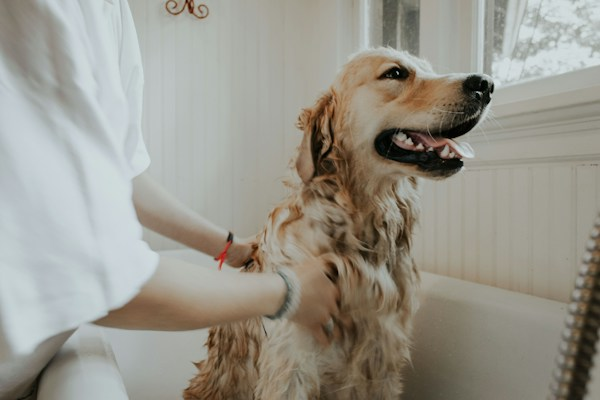

Taking Care of Your Dog
Taking care of a dog is a big responsibility that requires time, patience, and love. Dogs need fresh water and healthy food every day. They also need regular exercise to stay strong and healthy. Walking your dog is a great way to keep it active. Dogs need regular visits to the veterinarian for checkups. Providing a safe and comfortable home helps dogs feel secure. Giving your dog attention and affection helps it live a happy life.
Keeping Dogs Happy and Healthy
There are many ways to keep a dog happy and healthy. Playing games like fetch helps dogs stay active and entertained. Grooming is important because brushing keeps their fur clean. Dogs also need a comfortable place to sleep and rest. Training helps dogs learn good behavior and basic commands. Spending time with your dog helps build a strong relationship. Dogs enjoy being around their owners and receiving attention. Giving dogs proper care helps them live longer and healthier lives.
Pictures of Dogs

Important Ways to Care for a Dog
- Provide fresh water and healthy food every day.
- Take your dog on regular walks and provide exercise.
- Schedule regular veterinary checkups.
- Give your dog love, attention, and a safe home.
Helpful Dog Care Websites
Visit these websites for more information about dog care: